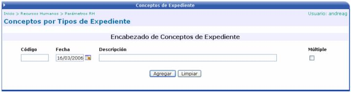
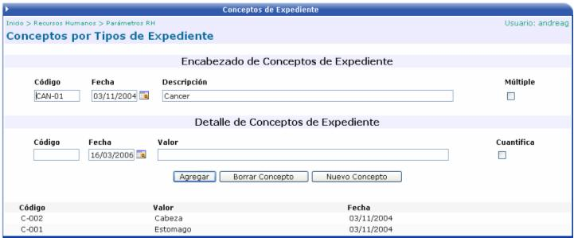
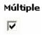
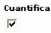

Aquí se crea la lista de los conceptos por tipo de expediente.

Al aceptar el encabezado se debe de insertar el detalle, que son las opciones que se le presentan al usuario para su elección.


Selección múltiple: pone varios checks para activar.
Y si no se activa este check, crea una caja de selección donde solamente podrá escoger un detalle.

Significa que pone un campo de texto, para que se digite la cantidad que se presenta.